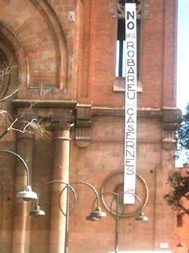

manifest L'Ajuntament de Barcelona va fer públic, l'any 2002, un conveni de compra del terreny de la caserna qualificada d'equipaments per 2.200 milions de pessetes. En canvi el que ha fet és cedir aquesta prioritat a una entitat semiprivada com és el Consorci de la Zona Franca, que n'ha comprat la totalitat per 14.000 milions de pessetes. |
|
  Sant Andreu per les Casernes: |
Els i les veïnes de Sant Andreu de Palomar. DENUNCIEM -El greu dèficit que patim des de fa temps en habitatges de lloguer. Necessitem habitatges públics de lloguer, especialment per als i les joves i per tots els ciutadans que, degut l'encariment de l'habitatge i a la tolerància davant l'especulació privada amb el sòl, s'estan veient obligats/es a marxar del nostre poble. -Això provoca un envelliment progressiu de la població Sant Andreu, poble de condició i consciència obrera, trencant així un ritme i estil de vida particulars, un teixit social necessari per a qualsevol poble viu. -Que l'explosió demogràfica que ha patit el nostre poble, receptor de població del municipi de Barcelona i rodalies, ha agreujat el dèficit crònic d'equipaments socials i culturals que patíem, amb greu risc de perpetuar aquesta precarietat social. -La venta de sòl dels ciutadans, és a dir, del nostre patrimoni a un ens semiprivat i que ja ha manifestat la seva voluntat de fer pisos a preu de mercat per rendibilitzar l'operació, augmentant encara més els preus dels pisos a Sant Andreu. A més el Consorci ja ha fet públic que vol usar els terrenys per fer negoci (un centre comercial, un edifici d'oficines). Cal remarcar que aquests eren dels pocs terrenys públics que queden a Sant Andreu. -Aquest tipus d'operacions especulatives són una política habitual que l'ajuntament de Barcelona, tot i estar format pel PSC, ERC i IC i autoanomenar-se d'esquerres, duu a terme a tota la ciutat en contradicció amb les seves campanyes electorals. -Que no hi ha hagut cap mena de control en l'adjudicació dels pisos de preu taxat del pla Sant Andreu-Sagrera. Segons la modificació del PGM, havien de ser un 20% dels pisos construïts per les immobiliàries i dels qual no se sap on són. El que ens queda ara a les casernes, segons el pla, no és més que un 10%. -La manca de transparència que hi ha hagut en la compra dels terrenys: Nosaltres havíem demanat al Districte saber qui en seria el propietari, i què es tenia pensat fer amb els terrenys. Com a resposta vam obtenir la negativa de qualsevol tipus de diàleg, volent aplaçar el moment de dir la veritat, que es comunicà sols poques hores abans de fer-ho públic. Per tant, REIVINDIQUEM -Que el 100% dels habitatges siguin públics i assequibles. -Una política real d'habitatges per als ciutadans, i que es vetlli perquè l'adjudicació d'habitatge protegit sigui totalment transparent. -Uns equipaments imprescindibles com són un Ambulatori amb especialistes, casals de joves, de gent gran i d'entitats, llars d'infants, pisos tutelats per a la gent gran, entre molts altres equipaments socials i culturals públics. -Una zona verda per a Sant Andreu, un pulmó perquè hi hagi un equilibri de sostenibilitat, no en tenim cap. Per tant, tenim necessitats suficients com per no voler cap equipament de ciutat, com la comissaria dels Mossos d'Esquadra, ni cap negoci. No ens valen excuses de cap mena, ja que les necessitats hi són, sols falta la voluntat dels partits polítics de l'Ajuntament de Barcelona. No valen romanços de finançament, sobretot si tenim en compte la despesa que suposa el Fòrum 2004, més de 2.300 milions de pessetes, una infrastructura que sols serveix de propaganda urbanística, especulativa i de publicitat cara enfora i per uns quants dies, mentre que si es destinessin a pal·liar les necessitats reals dels i les habitants del municipi de Barcelona, aquests diners serien més ben invertits i l'ús molt més compartit i durador. No ens robareu les casernes! |
|
AJStA
- Assemblea
de Joves de St. Andreu
·
JOC - Joventut Obrera Cristiana ·
ACO - Acció Catòlica Obrera ·
MCJ - Moviment Cristià de Joves · A.VV. Sant Andreu de Palomar · El Brot · Diables de StA · Factoria Paparote Teatre · WEB STAP · Comissió de Festes de StAP · A.E. Jaume I · Aula Extensió Universitària · Casal Catòlic StA · Parròquia Sant Pacià · E. St. Joan de Mata · Parròquia Sant Andreu de Palomar · santandreu.net · A.E.G. Gregal · A.VV. Sant Andreu Tramuntana · Centre Cultural Els Catalanistes · A.Exc. Muntanya · Plataforma Sant Andreu Aturem la Guerra/La XarXa · FAVB Federació d'Associacions de Veïns de Barcelona · A.E. Pare Bertran · Satànica · Germandat de Trabucaires, Geganters i Grallers de StA · |
manifest |
dades estadístiques |
webstap@sant-andreu.com
per a dinamitzar Sant Andreu de Palomar i denunciar els greuges, les potinades i les agressions que pateix
|

Tornar